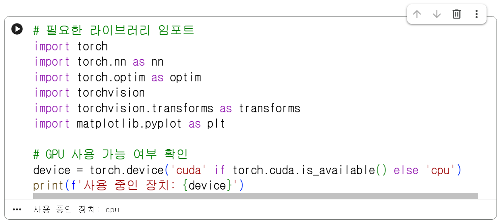

[19차시] 합성곱 신경망(CNN) 실습
학습 목표
- 합성곱 신경망(CNN)의 핵심 개념(합성곱, 풀링, 완전연결층)을 이해할 수 있다.
- 구글 코랩 환경에서 PyTorch/TensorFlow/Keras 라이브러리를 활용하여 CNN 모델을 구축하고 이미지 분류 실습을 수행할 수 있다.
합성곱 신경망(CNN) 모델
- 이미지의 공간 정보(위치, 형상 등)를 유지한 채 특징을 추출하여 객체나 형태를 인식하고 분류하는 대표적인 딥러닝 알고리즘
- 합성곱 층(Convolutional Layer): 필터(Filter/Kernel)를 이용해 이미지의 에지(Edge), 질감 등 대표적인 특징(Feature map)을 추출함.
- 풀링 층(Pooling Layer): 이미지의 공간 크기를 줄여 계산량을 감소시키고 중요한 특징을 강화함.(예: Max Pooling)
- 완전연결 층(Fully Connected Layer): 추출된 특징들을 종합하여 최종적으로 이미지가 어떤 클래스에 속하는지 확률로 분류함.
실습 과제
[1단계] 실습 환경 구성 및 패키지 불러오기
- 구글 코랩에서 딥러닝 실습을 위해 필요한 파이썬 라이브러리(
torch,torchvision,matplotlib등)를 불러옴.


[2단계] 데이터셋 다운로드 및 전처리
- 10가지 범주의 이미지 데이터로 구성된 CIFAR-10 데이터셋을 다운로드하고, 모델 입력에 맞게 정규화(Normalization) 전처리를 수행함.
- CIFAR-10 데이터셋: 비행기, 자동차, 새, 고양이, 사슴, 개, 개구리, 말, 배, 트럭 등 10개 클래스로 구성된 크기의 컬러 이미지 6만 장 데이터셋
# 이미지 전처리(텐서 변환 및 정규화) 정의
transform = transforms.Compose([
transforms.ToTensor(),
transforms.Normalize((0.5, 0.5, 0.5), (0.5, 0.5, 0.5))
])
# CIFAR-10 학습/테스트 데이터셋 다운로드
trainset = torchvision.datasets.CIFAR10(root='./data', train=True, download=True, transform=transform)
trainloader = torch.utils.data.DataLoader(trainset, batch_size=32, shuffle=True)
testset = torchvision.datasets.CIFAR10(root='./data', train=False, download=True, transform=transform)
testloader = torch.utils.data.DataLoader(testset, batch_size=32, shuffle=False)
classes = ('plane', 'car', 'bird', 'cat', 'deer', 'dog', 'frog', 'horse', 'ship', 'truck')
[3단계] CNN 모델 구조 정의하기
- Conv2D, ReLU, MaxPooling2D, Linear(Dense) 레이어를 쌓아 기본 CNN 모델 구조를 구현하기
class SimpleCNN(nn.Module):
def __init__(self):
super(SimpleCNN, self).__init__()
# 합성곱 층 1: 입력 3채널 -> 출력 16채널, 커널 3x3
self.conv1 = nn.Conv2d(3, 16, kernel_size=3, padding=1)
self.relu = nn.ReLU()
# Max Pooling: 2x2
self.pool = nn.MaxPool2d(2, 2)
# 합성곱 층 2: 입력 16채널 -> 출력 32채널, 커널 3x3
self.conv2 = nn.Conv2d(16, 32, kernel_size=3, padding=1)
# 완전연결 층 (32 * 8 * 8 -> 10개 클래스)
self.fc1 = nn.Linear(32 * 8 * 8, 128)
self.fc2 = nn.Linear(128, 10)
def forward(self, x):
x = self.pool(self.relu(self.conv1(x))) # 특징 추출 및 크기 축소 (16x16)
x = self.pool(self.relu(self.conv2(x))) # 특징 추출 및 크기 축소 (8x8)
x = x.view(-1, 32 * 8 * 8) # 1차원 펼치기 (Flatten)
x = self.relu(self.fc1(x)) # 은닉층
x = self.fc2(x) # 출력층
return x
model = SimpleCNN().to(device)
print(model)
SimpleCNN모델의 간단한 CNN 분류기 구조임을 보여줌.- 합성곱 층 2개(conv1, conv2)
- ReLU 활성화 함수 1개(relu)
- Max Pooling 층 1개(pool)
- 완전연결 층 2개(fc1, fc2)
[4단계] 모델 학습 및 평가
- 손실 함수(CrossEntropyLoss)와 최적화 알고리즘(Adam/SGD)을 정의하고 학습을 진행함.
criterion = nn.CrossEntropyLoss()
optimizer = optim.Adam(model.parameters(), lr=0.001)
# 3 에포크(Epoch) 동안 학습 진행
for epoch in range(3):
running_loss = 0.0
for i, data in enumerate(trainloader, 0):
inputs, labels = data[0].to(device), data[1].to(device)
optimizer.zero_grad()
outputs = model(inputs)
loss = criterion(outputs, labels)
loss.backward()
optimizer.step()
running_loss += loss.item()
if i % 500 == 499: # 500 미니배치마다 출력
print(f'[{epoch + 1}, {i + 1:5d}] 손실(loss): {running_loss / 500:.3f}')
running_loss = 0.0
print('학습 완료!')
[5단계] 이미지 분류 결과 및 예측 시각화
- 테스트 이미지에 대해 CNN 모델이 예측한 결과와 실제 라벨을 나란히 시각화하여 분류 성능을 확인함.
import numpy as np
# 테스트 데이터 가져오기
dataiter = iter(testloader)
images, labels = next(dataiter)
# 예측 수행
outputs = model(images.to(device))
_, predicted = torch.max(outputs, 1)
# 시각화 함수
def imshow(img):
img = img / 2 + 0.5 # 역정규화
npimg = img.numpy()
plt.figure(figsize=(10, 4))
plt.imshow(np.transpose(npimg, (1, 2, 0)))
plt.axis('off')
plt.show()
# 실제값 및 예측값 출력
print('실제 라벨 (GroundTruth): ', ' '.join(f'{classes[labels[j]]:5s}' for j in range(4)))
print('예측 라벨 (Predicted) : ', ' '.join(f'{classes[predicted[j]]:5s}' for j in range(4)))
imshow(torchvision.utils.make_grid(images[:4]))
코드 설명
iter(testloader): 데이터 로더(testloader)를 이터레이터(반복자) 객체로 변환함.
next(dataiter): 첫 번째 데이터 배치(이미지들과 해당 실제 라벨들)를 가져와images와labels변수에 각각 저장함.
images.to(device): 이미지 데이터를 지정된 장치(CPU 또는 GPU/CUDA)로 이동시킨 후 학습된 모델에 전달하여 결과(outputs)를 얻음.
_, predicted = torch.max(outputs, 1): 각 이미지별로 가장 높은 확률/점수를 가진 클래스 인덱스를 추출함. 첫 번째 반환값(_)은 최대 점수값(사용하지 않으므로 생략), 두 번째 반환값(predicted)은 예측된 클래스의 인덱스 번호임.
img = img / 2 + 0.5: 학습 시 적용했던 정규화(Normalize(mean=0.5, std=0.5))를 되돌려 원래 이미지 화질/색상으로 복원함.
npimg = img.numpy(): PyTorch 텐서(Tensor) 형태의 이미지 데이터를 NumPy 배열로 변환함.
plt.figure(figsize=(10, 4)): 출력할 그래프/이미지의 전체 크기를 설정함.
np.transpose(npimg, (1, 2, 0)): PyTorch 차원 순서인(채널, 세로, 가로)를 Matplotlib 출력을 위한(세로, 가로, 채널)순서로 재배치함.
plt.axis('off'): 이미지에 축(X, Y 축 눈금)을 표시하지 않도록 숨김.
plt.show(): 화면에 최종 이미지를 출력함.
- 첫 번째
print: 배치 내 상위 4개 데이터의 실제 정답 라벨명(classes리스트 참조)을 5자리 폭으로 정렬하여 출력함.
- 두 번째
print: 모델이 예측한 상위 4개 데이터의 예측 라벨명을 출력함.
torchvision.utils.make_grid(images[:4]): 처음 4개의 이미지 데이터를 하나의 격자(Grid) 형태 이미지로 묶어 결합함.
imshow(...): 묶인 이미지를 앞서 정의한imshow함수로 전달하여 역정규화 후 화면에 시각화함.
실제 라벨과 예측 라벨이 서로 다른 이유
[개별 추가 과제]
| 학번 | 문제 유형 | 추가 실습 과제 | 예상 실행 코드 |
|---|---|---|---|
| 01 | 옵션 변경 | 학습률(Learning Rate)을 0.001에서 0.01로 상향 후 학습 loss 변화 비교하기 | optimizer = optim.Adam(model.parameters(), lr=0.01) |
| 02 | 옵션 변경 | Epoch 반복 횟수를 3회에서 5회로 변경하여 성능 변화 측정하기 | for epoch in range(5): |
| 03 | 모델 변경 | Conv2d 레이어를 1개 더 추가(3층 구조)하여 네트워크 깊이 확장하기 | self.conv3 = nn.Conv2d(32, 64, 3, padding=1) 추가 |
| 04 | 데이터 변경 | 배치 크기(batch_size)를 32에서 64로 변경하여 데이터 로더 재설정하기 | trainloader = DataLoader(trainset, batch_size=64, ...) |
| 05 | 데이터 분석 | 전체 테스트 데이터셋에 대한 모델의 최종 정확도(Accuracy) 계산하기 | correct / total * 100 계산 코드 구현 |
| 06 | 전처리 | 입력 이미지를 무작위 수평 반전(RandomHorizontalFlip) 데이터 증강 적용하기 | transforms.RandomHorizontalFlip() 추가 |
| 07 | 데이터 필터링 | 특정 클래스(예: 'cat')에 대해서만 분류 정확도 구해보기 | if labels[j] == classes.index('cat'): ... |
| 08 | 시각화 | 에포크별 Loss 감소 추이를 Matplotlib 꺾은선 그래프로 시각화하기 | plt.plot(losses); plt.xlabel('Epoch'); plt.ylabel('Loss') |
| 09 | 코드 구현 | 각 레이어를 통과할 때마다 변화하는 feature map의 Tensor Shape 출력해보기 | print(x.shape)를 forward() 내부 각 단계마다 삽입 |
| 10 | 이미지 처리 | 입력 이미지를 흑백(Grayscale) 변환 전처리 후 CNN 채널 수를 1로 변경하여 실행하기 | transforms.Grayscale(num_output_channels=1) 및 Conv2d(1, 16, 3) |
| 11 | 모델 변경 | Max Pooling 대신 Average Pooling(nn.AvgPool2d)을 적용해보고 결과 비교하기 | self.pool = nn.AvgPool2d(2, 2) |
| 12 | 시각화 | 혼동 행렬(Confusion Matrix)을 사용하여 10개 클래스별 오분류 비율 시각화하기 | from sklearn.metrics import confusion_matrix 및 sns.heatmap() 사용 |